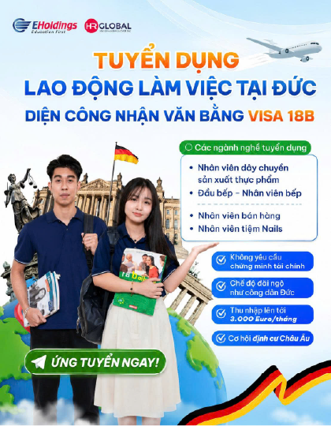
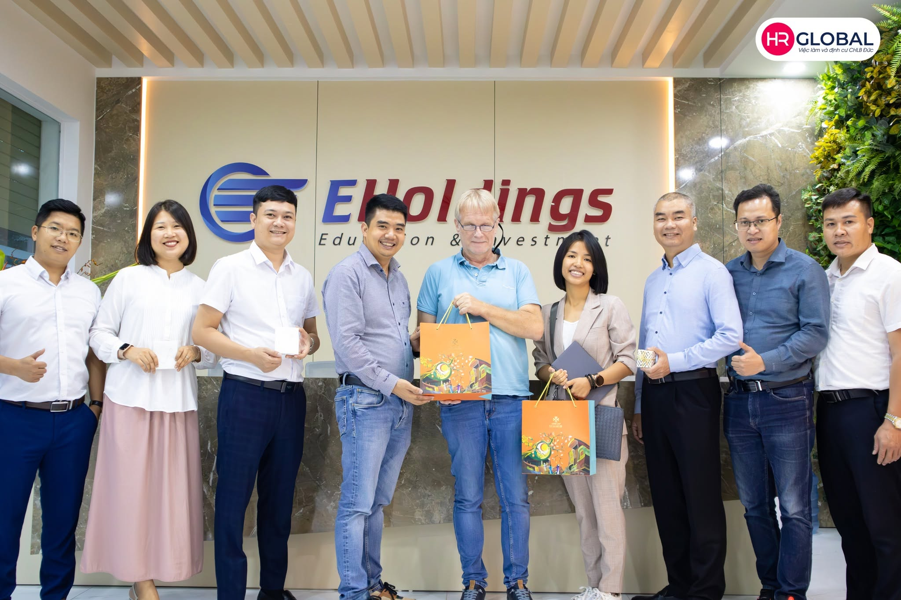

Bằng cấp
CĐ / ĐH
Tận dụng bằng cấp sang Đức làm việc ngay
Mở lối cơ hội làm việc tại Đức với thu nhập 50 – 70 triệu đồng / tháng
Đi làm nhiều năm nhưng thu nhập không tương xứng với năng lực.
Làm công việc trái ngành, không cần đến bằng đã học.
Thu nhập thấp, tăng lương chậm, khó tích lũy.
Muốn tìm công việc ổn định hơn với thu nhập tốt hơn.

Chương trình công nhận bằng cấp dành cho những bạn đã tốt nghiệp Cao đẳng hoặc Đại học tại Việt Nam, sử dụng chính tấm bằng đó để làm việc hợp pháp tại Đức theo diện lao động có tay nghề.
Thay vì học lại từ đầu, bằng cấp của bạn sẽ được cơ quan có thẩm quyền đánh giá và công nhận. Sau khi hoàn tất quá trình công nhận, bạn sẽ xin visa lao động để làm việc hợp pháp tại Đức, hưởng mức thu nhập hấp dẫn cùng chế độ phúc lợi toàn diện tại một trong những quốc gia phát triển hàng đầu châu Âu.
Công nhận bằng Đại học và làm việc tại Đức
Công nhận bằng nghề và làm việc tại Đức
CĐ / ĐH
Tận dụng bằng cấp sang Đức làm việc ngay
1.500 – 2.500 EUR
Thu nhập ổn định mỗi tháng
Toàn diện
Hưởng đầy đủ phúc lợi lao động tại Đức
20 – 24 ngày
Nghỉ phép năm tối thiểu theo luật
3 – 4 năm
Cơ hội xin định cư lâu dài tại Đức
Nam / nữ từ 22 – 40 tuổi.
Đã tốt nghiệp Cao đẳng hoặc Đại học các hệ chính quy, tại chức, liên thông, đào tạo từ xa.
Không yêu cầu chứng chỉ tiếng Đức.
Không yêu cầu kinh nghiệm làm việc.
Hàng nghìn học viên tin tưởng lựa chọn, tỷ lệ học viên xuất cảnh trên 90%.
Đánh giá hồ sơ 1:1, xây dựng lộ trình phù hợp với năng lực và mục tiêu của từng học viên.
Đồng hành xuyên suốt từ chuẩn bị hồ sơ, phỏng vấn, xin visa đến khi bạn ổn định sự nghiệp tại Đức.
Mạng lưới đối tác rộng khắp nước Đức, mang đến nhiều cơ hội việc làm chất lượng với mức lương cao, đãi ngộ tốt.
Đào tạo tiếng Đức chuyên sâu tại hệ thống Euro Centre với đội ngũ giảng viên giàu kinh nghiệm và giáo viên bản xứ.



Để lại thông tin để được HR Global đánh giá hồ sơ miễn phí và tư vấn lộ trình phù hợp nhất với bạn.

Visa 18b được xem là một trong những con đường hấp dẫn để người có bằng đại học làm việc và phát triển sự nghiệp tại Đức. Tuy nhiên, khi tìm hiểu về chương trình này, rất nhiều ...

Đức là một trong những quốc gia có chính sách thu hút lao động tay nghề cao với nhiều cơ hội phát triển sự nghiệp và ổn định cuộc sống lâu dài. Trong đó, visa 18B được xem là “t...

Nếu bạn đang có kế hoạch học tập, làm việc hoặc xin visa tại Đức, việc kiểm tra bằng đại học trên Anabin là bước đầu tiên không thể bỏ qua. Tuy nhiên, không phải ai cũng biết cá...

Trước khi kiểm tra tính hợp lệ của bằng cấp để làm việc hoặc học tập tại Đức, nhiều người thường bắt gặp ký hiệu H+ trên hệ thống Anabin nhưng chưa hiểu ý nghĩa của ký hiệu này....

Chi phí luôn là một trong những mối quan tâm hàng đầu của người lao động khi có kế hoạch sang Đức làm việc theo diện visa 18B. Vậy đi Đức diện visa 18B bao nhiêu tiền? Cần chuẩn...

Tiếp nối thành công của chuỗi Ngày hội nhập học trên toàn quốc, EHoldings – HRGlobal miền Nam đã tổ chức lễ khai giảng, chào đón những học viên mới chính thức gia nhập đại gia đ...

Tiếp nối thành công của Ngày hội nhập học đầu tiên, EHoldings – HRGlobal đã tiếp tục tổ chức Ngày hội nhập học lần thứ hai trong tháng 6, chào đón những học viên mới chính thức ...

Chuẩn bị hồ sơ xin visa 18b Đức là một trong những bước quan trọng, ảnh hưởng trực tiếp đến tiến độ xét duyệt và thời gian nhận visa. Một bộ hồ sơ đầy đủ, chính xác không chỉ gi...

Visa 18b là một trong những chương trình làm việc tại Đức dành cho lao động có trình độ chuyên môn, mở ra cơ hội nhận mức thu nhập hấp dẫn và phát triển sự nghiệp lâu dài tại ch...

Tiếp nối chuỗi tin vui trên hành trình chinh phục giấc mơ Đức, HRGlobal xin gửi lời chúc mừng tới học viên đã chính thức nhận được hợp đồng làm việc tại Đức với vị trí Chuyên vi...

Tiếp nối chuỗi ngày hội nhập học và khai giảng được tổ chức trên toàn quốc, vừa qua EHoldings – HRGlobal khu vực miền Nam đã tổ chức thành công Ngày hội nhập học và khai giảng n...

Ngày hội nhập học EHoldings – HRGlobal tổ chức đã diễn ra thành công tốt đẹp, chào đón hơn 200 học viên cùng phụ huynh đến từ nhiều tỉnh thành khu vực miền Bắc và miền Trung. Đâ...

Visa 18a hiện là một trong những diện visa lao động Đức phổ biến và được nhiều người Việt Nam lựa chọn nhờ cơ hội làm việc lâu dài cùng chế độ đãi ngộ hấp dẫn. Để tham gia chươn...

Hiện nay, Đức đang đối mặt với tình trạng thiếu hụt lao động có tay nghề trong nhiều lĩnh vực như điều dưỡng, y tế, kỹ thuật, xây dựng và giáo dục. Để giải quyết bài toán nhân l...

Nước Đức không chỉ nổi tiếng với nền kinh tế hàng đầu châu Âu mà còn sở hữu một nền văn hóa đặc sắc.Với những lễ hội sôi động, thói quen sinh hoạt thú vị đến các quy tắc ứng xử ...

Là quốc gia sở hữu nền kinh tế lớn nhất châu Âu, Đức luôn có nhu cầu tuyển dụng nguồn nhân lực chất lượng cao trong nhiều lĩnh vực. Để thu hút và tạo điều kiện cho lao động quốc...

Khi tìm hiểu chương trình công nhận văn bằng để sang Đức làm việc theo diện visa 18B, chắc hẳn bạn sẽ nhiều lần bắt gặp thuật ngữ ZAB. Đây là một trong những bước quan trọng giú...

Là một hoạt động thường niên của HRGlobal (Công ty thuộc tập đoàn Eholdings), EHOLDINGS FEST là sự kiện nổi bật và được mong chờ nhất trong mùa lễ hội cuối năm của HRGlobal. Với...

HRGlobal xin chúc mừng học viên đã chính thức nhận được quyết định công nhận văn bằng Đức chuyên ngành Kỹ sư kỹ thuật điện tử viễn thông. Đây là một cột mốc quan trọng trên hành...

Tiếp tục nối dài chuỗi tin vui trong hành trình đưa nguồn nhân lực Việt Nam sang làm việc tại CHLB Đức, HRGlobal chúc mừng 4 học viên đã chính thức nhận được hợp đồng Chuyên viê...

Đức đang mở ra nhiều cơ hội việc làm hấp dẫn cho lao động quốc tế, trong đó visa 18a 18b và 16d là ba diện được người lao động Việt Nam đặc biệt quan tâm. Tuy nhiên, không phải ...

Visa 18a Đức là một trong những loại visa lao động tay nghề đang nhận được sự quan tâm lớn từ người lao động Việt Nam. Diện visa này mở ra cơ hội làm việc hợp pháp, hưởng mức lư...

Visa 18B Đức đang trở thành một trong những diện visa lao động được nhiều người Việt Nam quan tâm nhờ cơ hội làm việc hợp pháp, thu nhập ổn định và khả năng định cư lâu dài tại ...

Chương trình chuyển đổi bằng cấp và làm việc tại Đức diện visa 16D mở ra cơ hội dành cho người lao động Việt Nam có bằng cao đẳng, đại học hoặc chứng chỉ nghề mong muốn phát tri...

Chương trình công nhận bằng cấp và làm việc tại CHLB Đức diện visa 18B là cơ hội dành cho người lao động Việt Nam có bằng cao đẳng hoặc đại học mong muốn phát triển sự nghiệp tạ...

Có những giấc mơ bắt đầu từ sự dũng cảm bước ra khỏi vùng an toàn. Giấc mơ được sống, làm việc và phát triển sự nghiệp tại CHLB Đức – nơi mọi thứ đều mới mẻ và thành công chỉ dà...

HR Global thông báo tuyển dụng Chuyên viên Công nghệ Thực phẩm làm việc tại CHLB Đức diện Visa 18B với thông tin cụ thể như sau: Vị trí công việc: Chuyên viên Công nghệ Thực phẩ...

“Không có gì quý hơn độc lập, tự do” – Chủ tịch Hồ Chí Minh. Ngày 30/4/1975 là mốc son chói lọi trong lịch sử dân tộc Việt Nam – ngày non sông liền một dải, Bắc Nam sum họp một ...
![[Hà Nội → Hamburg] Chuyến bay mang số hiệu “HR Global” xuất cảnh thành công, cất cánh giấc mơ Đức](https://hrglobal.vn/wp-content/uploads/2026/04/MG_0353-768x512.jpg)
Tối ngày 13/04, đội ngũ HR Global đã đồng hành và hỗ trợ học viên Quốc Việt hoàn tất thủ tục xuất cảnh, chính thức lên đường tới Đức, bắt đầu hành trình xây dựng sự nghiệp và kh...

Trong bối cảnh hội nhập ngày càng sâu rộng, Tổ chức Giáo dục & Nhân lực Quốc tế EHoldings Group đã tổ chức lễ ký kết hợp tác chiến lược với Trung tâm phát triển giáo dục và đào ...

Nhập quốc tịch Đức là mục tiêu của nhiều người đang sinh sống, học tập và làm việc lâu dài tại Đức. Việc trở thành công dân Đức không chỉ mang lại quyền lợi về cư trú ổn định, m...

HR Global thông báo tuyển dụng nhân viên Bếp Việt làm việc tại CHLB Đức theo diện Công nhận bằng cấp – Visa 18B thông tin cụ thể như sau: Vị trí công việc: Nhân viên Bếp Địa điể...

HR Global thông báo tuyển dụng nhân viên Chế biến thực phẩm làm việc tại CHLB Đức theo diện Công nhận bằng cấp – Visa 18B thông tin cụ thể như sau: Vị trí công việc: Nhân viên C...

Để chuẩn bị tâm lý và dễ dàng hòa nhập hơn sau khi tới Đức, hãy cùng HR Global tổng hợp và khám phá những điểm khác biệt trong văn hoá và thói quen sinh hoạt tại Đức mà bất kỳ a...

Trong bối cảnh nhiều cử nhân Việt Nam đối mặt với áp lực thất nghiệp và thiếu cơ hội phát triển sau khi tốt nghiệp, ngày càng nhiều bạn trẻ lựa chọn tìm kiếm cơ hội nghề nghiệp ...

Nhiều người lựa chọn CHLB Đức không chỉ vì cơ hội việc làm mà còn bởi mong muốn xây dựng cuộc sống ổn định và lâu dài cho gia đình. Cùng HR Global khám phá lý do Đức trở thành đ...

Visa 18B mở ra cơ hội làm việc và định cư tại Đức cho những người có bằng đại học tại Việt Nam. Cùng HR Global tìm hiểu 7 câu hỏi thường gặp nhất để hiểu rõ hơn về chương trình ...

Năng lực tiếng Đức là yếu tố quan trọng hàng đầu bắt đầu hành trình làm việc tại CHLB Đức. Tuy nhiên, yêu cầu về trình độ tiếng của các chương trình việc làm phổ biến hiện nay l...

Trong bối cảnh thị trường lao động trong nước cạnh tranh gay gắt, nhiều cử nhân Việt Nam sau khi tốt nghiệp Đại học đang tìm kiếm những hướng đi mới để nâng cao thu nhập và phát...

Trước khi chính thức đặt chân tới Đức làm việc, người lao động cần hoàn tất thủ tục xin visa 18B tại Đại sứ quán hoặc Lãnh sự quán Đức. Cùng HR Global tìm hiểu chi tiết các bước...

Oktoberfest được mệnh danh là lễ hội bia lớn nhất trên thế giới, đây cũng là một phần quan trọng trong văn hoá, lịch sử và tinh thần của người Đức từ lâu đời. Đằng sau một lễ hộ...

Nền ẩm thực nước Đức được biết đến với rất nhiều món ăn phong phú và đa dạng, sẵn sàng chinh phục du khách thập phương khi ghé thăm đất nước này. Hãy cùng HR Global tìm hiểu top...

Khi tới Đức làm việc, học tập hay đào tạo nghề, giấy phép cư trú (Aufenthaltstitel) chính là “tấm vé hợp pháp” để bạn yên tâm sinh sống và làm việc tại quốc gia này. Trong bài v...

Sau mỗi chuyến bay dài và thay đổi môi trường độc lập có thể khiến bạn gặp phải tình trạng “Jet lag”. Cùng HR Global điểm qua một số mẹo hay có thể giúp bạn sớm thích nghi và kh...

CHLB Đức được mệnh danh là quốc gia có bề dày lịch sử lâu đời cùng những nét văn hóa đặc trưng. Vậy đâu là những biểu tượng mà bạn không thể bỏ qua khi nhắc tới nước Đức. Hãy cù...

Khi sinh sống và làm việc tại CHLB Đức, người lao động cần hiểu rõ quyền lợi và những quy định cần chấp hành ở nước sở tại. Trong bài viết này, hãy cùng HR Global tìm hiểu thông...

Nếu bạn đã kinh nghiệm làm việc và bằng nghề ở Việt Nam, tham gia chương trình việc làm Đức diện công nhận văn bằng chính là bước đệm quan trọng giúp bạn có cơ hội làm việc đúng...

Trước khi bắt đầu làm việc tại Đức, người lao động cần tìm hiểu và hiểu rõ những điều khoản quan trọng trong hợp đồng lao động. Điều này ảnh hưởng trực tiếp đến việc bảo vệ quyề...

Giờ làm việc tại CHLB Đức được Luật Lao động quy định rõ ràng nhằm thể hiện sự nỗ lực của Chính phủ Đức trong việc tạo điều kiện để người lao động cân bằng giữa công việc và cuộ...

Chương trình việc làm diện công nhận văn bằng tạo cơ hội cho lao động nước ngoài phát triển sự nghiệp tại CHLB Đức. Trong đó, với nhu cầu gia tăng nhân lực ngành Đầu bếp – Nhà h...

Sau khi tốt nghiệp Trung cấp, Cao đẳng, Đại học, việc tìm kiếm một công việc ổn định và đúng chuyên môn là mối quan tâm của rất nhiều sinh viên. Trong bài viết này, hãy cùng HR ...

Trong bối cảnh dân số già hóa nhanh cùng nhu cầu chăm sóc y tế ngày càng tăng cao, thị trường việc làm tại Đức ngành Điều dưỡng đang mở ra nhiều cơ hội hấp dẫn cho lao động Việt...

Việc làm Đức diện chuyển đổi bằng cấp là chương trình việc làm dành cho người lao động đã qua đào tạo Trung cấp/ Cao đẳng/ Đại học. Chương trình này thu hút lao động Việt nhờ cơ...

CHLB Đức nổi tiếng là quốc gia có nền kinh tế phát triển hàng đầu thế giới, quy định về luật lao động Đức cũng nổi tiếng rất nghiêm ngặt, rõ ràng và nêu cao ưu tiên cho quyền lợ...

Để làm việc tại CHLB Đức theo diện chuyển đổi bằng cấp, người lao động cần trải qua vòng phỏng vấn trực tiếp với đại diện các doanh nghiệp tại Đức. “Phỏng vấn” là cơ hội để mỗi ...

Khi sống và làm việc tại Đức, dù là một công dân nước ngoài, bạn vẫn cần hoàn thành nghĩa vụ tài chính về thuế như người Đức. Trong bài viết này, cùng HR Global khám phá những l...

Sáng nay (21/4/2025), gian hàng HR Global đã có mặt tại Ngày hội việc HNIVC 2025 – Sự kiện thường niên do trường Cao đẳng nghề Công nghiệp Hà Nội tổ chức, với sự tham gia của hơ...

Không chỉ nổi tiếng với nền công nghiệp phát triển bậc nhất châu Âu, nước Đức còn là cái nôi của hệ thống bảo hiểm xã hội hiện đại. Hệ thống bảo hiểm xã hội toàn diện cùng chế đ...

Bạn đang trong quá trình chuẩn bị hành lý sang Đức sinh sống & làm việc và đang băn khoăn mình cần mang và không nên mang những gì? Hãy để HR Global chia sẻ kinh nghiệm sắp xếp ...

Khi ứng tuyển chương trình việc làm Đức theo diện công nhận văn bằng, các ứng viên cần chuẩn bị đầy đủ một số giấy tờ cần thiết trong hồ sơ để đảm bảo thông qua các thủ tục và đ...

Bắt đầu cuộc sống tại Đức chắc chắn là một hành trình đầy mới mẻ và hứng khởi nhưng cũng mang theo không ít bỡ ngỡ cho những người mới đến Đức lần đầu. Trong bài viết này, HR Gl...

Năm 2024, CHLB Đức lọt top 3 nền kinh tế lớn nhất thế giới với GDP hơn 4.400 tỷ USD – nền kinh tế lớn mạnh này được hình thành nên bởi chính những nguyên tắc trong văn hóa làm v...

Trong bối cảnh thị trường việc làm tại Đức đang thiếu hụt nhân lực ở nhiều lĩnh vực, ngành Chế biến món ăn nổi lên như một ngành nghề đầy tiềm năng với mức thu nhập ổn định, chế...
Trong bối cảnh toàn cầu hóa và hội nhập quốc tế ngày càng sâu rộng, việc chọn một quốc gia để sinh sống và phát triển sự nghiệp đang trở thành mối quan tâm hàng đầu của nhiều ng...

Đầu bếp đặc sản là một trong những ngành có tiềm năng phát triển lớn tại CHLB Đức khi cộng đồng người Việt sinh sống tại đây ngày càng đông đảo. Tuy nhiên, không phải ai cũng hi...

Để quá trình tham gia chương trình Việc làm Đức diện công nhận bằng cấp diễn ra thuận lợi, các ứng viên cần nắm được một số cột mốc quan trọng và chuẩn bị những hành trang cần t...

Nhằm thúc đẩy hợp tác và nâng cao chất lượng đào tạo nghề, ngày 26/03, HR Global phối hợp cùng Tập đoàn Avestos đã có buổi gặp gỡ và làm việc với Trường Cao đẳng Kỹ thuật và Ngh...

Ngày 26/03/2025, buổi tọa đàm giữa Tập đoàn Avestos HR UG, HR Global và Trường Cao đẳng nghề Công nghiệp Hà Nội đã diễn ra thành công với mục tiêu thúc đẩy hợp tác trong hoạt độ...

Làm việc tại Đức thu hút nhiều lao động Việt nhờ thu nhập cao, môi trường chuyên nghiệp cùng cơ hội định cư lâu dài tại cường quốc kinh tế của thế giới. Chương trình việc làm hệ...

Ngày 26/03 vừa qua, HR Global phối hợp cùng Tập đoàn Avestos và Hiệp hội các Trường Cao đẳng Nghề nghiệp Ngoài công lập Việt Nam (VANC) tổ chức buổi làm việc nhằm thúc đẩy quan ...

Theo báo cáo, dự kiến năm 2035, Đức sẽ cần tuyển thêm khoảng 500.00 người chăm sóc để bù đắp khoảng 307.000 vị trí điều dưỡng và 130.000 y tá lão khoa còn thiếu hụt cho hệ thống...

Nước Đức nổi tiếng với nền ẩm thực đa dạng và phong phú nhưng cũng không kém phần độc đáo, không khó hiểu khi đất nước này sở hữu hàng loạt bảo tàng ẩm thực thú vị thu hút hàng ...

Để có thể nhập cảnh vào Cộng hòa liên bang Đức, bạn cần được cấp thị thực với mục đích phù hợp, đây là yếu tố vô cùng quan trọng trong hành trình tới Đức của bạn. Trong bài viết...

Việc làm tại Đức hệ Chuyển đổi bằng cấp ngày càng trở thành lựa chọn hấp dẫn cho nhiều bạn trẻ Việt Nam sau tốt nghiệp Cao đẳng, Đại học. Thấu hiểu những trăn trở của ứng viên v...

Việc sống và làm việc tại một cường quốc phát triển về kinh tế lẫn an sinh xã hội như CHLB cũng đồng nghĩa với việc mức sống tại đây khá cao. Một trong những vấn đề mà người lao...

CHLB Đức không chỉ là một cường quốc kinh tế mà còn là điểm đến mơ ước của hàng triệu người lao động trên toàn cầu. Với nền kinh tế vững mạnh, chính sách phúc lợi xã hội tốt và ...

CHLB Đức có nền kinh tế lớn nhất châu Âu, nổi tiếng với nền kinh tế phát triển mạnh mẽ cùng hệ thống phúc lợi xã hội và môi trường làm việc chuyên nghiệp. Những năm gần đây, việ...

Năm 2025, CHLB Đức ban hành và thực thi sửa đổi một số chính sách và quy định liên quan trực tiếp đến quyền và lợi ích của công dân khi sinh sống và làm việc tại quốc gia này. H...

Giữa bối cảnh thị trường lao động và việc làm khắp các nước đang có những biến chuyển tích cực, người lao động tại Việt Nam có thêm nhiều sự lựa chọn với các cơ hội việc làm đún...

Làm việc tại các nhà hàng, khách sạn danh tiếng dưới bầu trời Đức là giấc mơ của không ít các bạn trẻ Việt Nam theo đuổi ngành bếp hiện nay. Hành trình chinh phục công việc tại ...

Ẩm thực Đức không chỉ là xúc xích và bia, mà còn là cả một hành trình trải nghiệm và khám phá văn hóa đầy tinh hoa. Trong bối cảnh ngành chế biến món ăn đang thiếu hụt nhân lực ...

Ước mơ chinh phục bếp Đức không còn xa vời với chương trình việc làm Đầu bếp đặc sản tại CHLB Đức cùng HR Global. Trong bài viết này, hãy cùng nhau tìm hiểu và khám phá tất cả n...

Ngày 23/12 vừa qua, HR Global đã có buổi làm việc & chia sẻ cùng sinh viên trường Cao đẳng Du lịch Hải Phòng về định hướng công việc sau khi tốt nghiệp, đặc biệt là định hướng l...

Ngành Điện – Điện tử tại CHLB Đức đang trong tình trạng thiếu hụt nhân lực khi nhu cầu về kỹ thuật viên và kỹ sư ngày càng tăng cao trong các lĩnh vực công nghiệp và sản xuất. Đ...

Khi tham gia chương trình việc làm hệ chuyển đổi bằng cấp tại Đức, một trong những vấn đề quan trọng mà mọi ứng viên quan tâm là lộ trình tham gia và chuyển đổi văn bằng để sẵn ...

Việc làm hệ chuyển đổi bằng cấp tại CHLB Đức là chương trình việc làm dành cho nhóm đối tượng là người lao động có chuyên môn, đã qua đào tạo tại các cơ sở Trung cấp/ Cao đẳng/ ...

Sự phát triển đứng hàng đầu thế giới về lĩnh vực công nghiệp khiến Đức luôn là điểm đến lý tưởng cho các chuyên gia ngành cơ khí. Nhu cầu nhân lực trong các ngành công nghiệp, s...

Chương trình việc làm hệ chuyển đổi bằng cấp ngành Điều dưỡng tại Đức mang đến cơ hội phát triển sự nghiệp vượt trội cho các chuyên gia trong ngành y tế. Với quy trình rõ ràng, ...

Ngày 20/09/2024 vừa qua, Tập đoàn Avestos đã có chuyến tham quan và làm việc cùng Ban Điều hành HR Global tại trụ sở Hà Nội với mục tiêu triển khai mở rộng mối quan hệ hợp tác g...

Ngày 13/09 vừa qua, Ban Điều hành HR Global đã có buổi đón tiếp và làm việc cùng Ban Giám hiệu trường Cao đẳng Du lịch Hà Nội tại trụ sở HR Global với mục tiêu triển khai mở rộn...

Nền kinh tế phát triển, hệ thống an sinh xã hội tiên tiến cùng chất lượng cuộc sống cao khiến Đức trở thành sự lựa chọn hàng đầu cho người lao động quốc tế đang có dự định sinh ...

Chế biến thực phẩm là một trong những ngành thiếu nhân lực tại CHLB Đức và nằm trong danh mục các ngành nghề có thể chuyển đổi bằng cấp tại Đức dành cho lao động đã qua đào tạo ...

Sáng ngày 31/7 vừa qua, BĐH HR Global đã có buổi gặp gỡ và làm việc cùng Lãnh đạo Trung tâm Đào tạo Thường xuyên thuộc trường Cao Đẳng Du lịch Hà Nội về mục tiêu triển khai chươ...

CHLB Đức – điểm đến mơ ước của rất nhiều bạn trẻ Việt Nam không chỉ có nền giáo dục nghề chất lượng cao, mà còn là đất nước có nền văn hóa đa dạng và phong phú, hy vọng các bạn ...